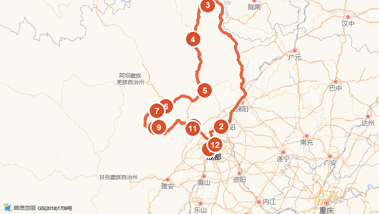

置顶 · 出发前必办清单 预约购票 / 租车取还 / 航班 / 天气衣物 / 证件药品 —— 请逐项确认
📅 提前办理时间轴
现在 → 出发前1个月订机票（早班去/晚班回）、订酒店、线上租车锁定价格
出发前 1–2 周抢九寨沟门票（旺季限流，最重要！），阿坝旅游网小程序
出发前 7 天熊猫谷预约（公众号「熊猫谷」）
出发前 5 天三星堆预约（每日 20:00 放票，手慢无）
出发前 1–3 天双桥沟、毕棚沟购票；查余票
出发前 3 天查九寨沟/四姑娘山/理县天气，确认路况（巴朗山、理小路）
🎫 景点预约购票 全部实名制 · 全部提前线上购 · 刷身份证入园
| 景区 | 价格 | 购票渠道 | 提前量 | 备注 |
|---|---|---|---|---|
| 九寨沟 | 280元（门票190+观光车90） | 「阿坝旅游网」小程序/公众号 | 1–2周（旺季限流抢票） | 不设现场售票窗口，观光车必购 |
| 三星堆博物馆 | 72元 | 三星堆博物馆官方公众号 | 提前5天（每日20:00放票） | 含陈列馆/修复馆，学生36元 |
| 四姑娘山双桥沟 | 150元（门票80+观光车70） | 四姑娘山景区官方渠道 | 提前1–3天 | 观光车必购，纵深约30km |
| 都江堰熊猫谷 | 55元 | 公众号「熊猫谷」 | 提前7天 | 按预约时段入园（早间熊猫活跃） |
| 毕棚沟 | 约130元（门票70+观光车60） | 美团/携程/景区官方 | 建议提前线上购 | 电瓶车两段往返60元自愿 |
| 都江堰景区（备选） | 80元 | 公众号「青城山-都江堰」 | 提前1–2天 | 本方案仅安排免费南桥夜游 |
🚗 线上租车 · 取还车流程
- 预订：出发前 1–2 周在神州/一嗨/携程/悟空 App 预订 SUV（探岳/CR-V/坦克300 等），取还点选双流机场，租期 9.14–9.18 共 6 天，加购不计免赔险（川西山路建议再加玻璃险）
- 取车（约40分钟）：按订单指引到机场取车点 → 出示身份证 + 驾驶证 → 签电子合同 → 绕车一周拍视频留证（车身划痕/轮毂/玻璃/油表/里程全记录）→ 确认满油取车 → 拿行驶证出发
- 还车（约45分钟）：9.18 下午 15:45 前到机场还车点，提前加满油（满油取满油还） → 工作人员验车 → 核对 ETC/高速费账单 → 确认押金退还方式 → 保留结算单
- 注意：违章押金一般 1–2 周内退还；取车后先熟悉车况（刹车/灯光/雨刮）再上高速
✈️ 航班（深圳 ⇄ 成都）
- 去程 9.14（周一）早班：订 07:00–08:30 起飞的航班（参考南航 CZ5861 07:00 到双流），落地约 09:30–11:00，直飞约 2.5h，参考价 500–1,100 元/人
- 返程 9.18（周五）晚班：订 19:30 之后起飞的航班，约 22:00 落地深圳，参考价 600–1,300 元/人
- 购票时机：提前 2–4 周购票锁定低价；9 月非节假日，早晚班常有折扣舱位
- 值机：国内航班提前 2 小时到机场——去程 06:00 前到宝安、返程 16:30 前到双流
- 机场：优先双流进出（去九寨沟方向更顺路）；若飞天府，去程多约 40km/1h，返程需预留更多时间
🧥 天气与衣物准备
- 天气：9月中旬川西高原白天 10–20°C、夜间 5–10°C（四姑娘山可低至 0–5°C），昼夜温差 10°C+；9 月仍处雨季尾声，山区小气候多变、可能遇雨雪雾
- 外套：冲锋衣/软壳（防风防雨）+ 轻薄羽绒或抓绒内胆（早晚叠穿）
- 内搭：速干长袖 2–3 件、长裤 2 条（含防风裤）、保暖袜、薄手套 + 毛线帽（清晨沟内看海子很冷）
- 鞋：防水防滑徒步鞋（九寨沟、双桥沟大量栈道徒步）
- 防晒防雨：SPF50+ 防晒霜、墨镜、遮阳帽（高原紫外线强）+ 一次性雨衣
- 路况：出发前 3 天查九寨沟、四姑娘山、理县天气；如遇强降温/大雪，巴朗山、理小路可能交通管制，备选改走高速绕行
🆔 证件 · 高反 · 药品
- 证件：全员身份证（所有景区刷证入园）、司机驾驶证（租车必需）
- 高反：行程最高 3800m（毕棚沟燕子岩窝/双桥沟红杉林），四姑娘山住宿海拔约 3200m——出发前 3–5 天开始服红景天；抵高海拔当晚不洗澡、不饮酒、慢行动
- 药品：感冒药、肠胃药、晕车药、布洛芬（应对高反头痛）、创可贴
- 随身：充电宝、保温杯、少量现金（山区部分路段信号弱，小店/加油站可能只收现金）、零食干粮（沟内午餐可自备）
- 氧气瓶：当地药店/酒店可买（约30元/瓶），出现头痛气短及时吸氧
环线总览
Day1 · 9.14 周一
深圳 ✈ 成都 → 三星堆 → 九寨沟口
Day2 · 9.15 周二
九寨沟 一日游 → 松潘古城
Day3 · 9.16 周三
毕棚沟 + 理小路 松潘→茂县→四姑娘山
Day4 · 9.17 周四
双桥沟 → 猫鼻梁 → 都江堰
Day5 · 9.18 周五
熊猫谷 → 春熙路 → ✈ 深圳
Day6 · 9.19 周六
缓冲日 凌晨抵深休整

1双流机场2三星堆3九寨沟
4松潘古城5茂县6毕棚沟
7理小路红石滩8双桥沟9猫鼻梁
10都江堰11熊猫谷12时代广场
地图来源：高德地图（Web服务API）· 路线为驾车实际规划路径，标记点为各景点与沿途风景点。
Day 1 深圳 ✈ 成都 → 三星堆 → 九寨沟口 ▶
🚗 双流机场→三星堆 65km/1h
🚗 三星堆→九寨沟 400km/5.5h（九绵高速）
🛣️ 过路费约 258 元
🏨 宿九寨沟沟口（漳扎镇）
🗓️ 时间安排（含游玩时长、休息与吃饭）
| 时间 | 类型 | 安排 |
|---|---|---|
| 06:30 | ✈ 乘机 | 到达深圳宝安机场（早班机，参考南航 CZ5861 07:00 直飞双流） |
| 09:30 | ✈ 落地 | 落地成都双流机场 → 线上预约的租车平台 T2 停车场取车（验车、拍照留档，约 40 分钟） |
| 10:20 | 🚗 驾车 | 出发 → 三星堆（65km/约1h，成都二绕 / 京昆高速） |
| 11:30–14:00 | 🏞 游玩 2.5h | 三星堆博物馆（门票72元，含陈列馆/修复馆；提前5天官方公众号预约） |
| 12:00–13:00 | 🍜 午饭 | 广汉市区或博物馆园区餐厅，顺带休息（推荐广汉缠丝兔、连山回锅肉） |
| 14:00 | 🚗 驾车 | 出发 → 九寨沟口（400km/约5.5h，京昆高速 → 绵阳 → 九绵高速，路平好开） |
| 16:30–16:50 | ☕ 休息 | 平武服务区休整 20 分钟，换驾驶员、加油（后半程山路加油站少，建议加满） |
| 19:30 | 🏨 入住 | 抵达九寨沟沟口（漳扎镇），办理入住 |
| 20:00–21:00 | 🍜 晚饭 | 沟口美食街：牦牛肉汤锅 / 藏式土火锅 |
| 21:30 | 😴 休息 | 早睡，为第二天九寨沟全天徒步养精蓄锐 |
🗺️ 路线地图（高德规划 · 含标记点）

📸 风景

🏨 住宿推荐（高德地图·沟口步行可达）
九寨沟贵宾楼饭店
九寨沟景区门口
距游客中心 112m丽呈别院·四季漫居酒店
漳扎镇彭丰村100号
距游客中心 559m智选假日酒店（九寨沟风景区店）
漳扎镇彭丰村一组4号
距游客中心 744m全季酒店（九寨沟景区店）
羊峒派出所西侧210米
距游客中心 1006m住沟口可步行进景区、免去停车排队，第二天一早刷身份证入园。9月中旬房价约 300–400 元/间，建议提前在携程/飞猪预订。
💡 若早班机飞天府机场，取车后到三星堆约 90km/1.5h，总里程多约 40km；飞双流更顺路，订票时优先选双流到达。
Day 2 九寨沟一日游（Y字形）→ 松潘古城 ▶
🏞 九寨沟景区约 9.5h（含午餐休息）
🚗 九寨沟→松潘 105km/2.4h（544国道）
🏨 宿松潘古城
🗓️ 时间安排
| 时间 | 类型 | 安排 |
|---|---|---|
| 07:00–07:30 | 🍜 早餐 | 酒店早餐，步行至游客中心 |
| 07:30 | 🏞 入园 | 刷身份证入园（门票190+观光车90=280元，提前实名预约），观光车在诺日朗分叉（若调度先去左支则反向玩），先去右支原始森林 |
| 07:30–12:00 | 🏞 游玩 4.5h | Y字右支：原始森林 → 箭竹海 → 熊猫海 → 五花海（必打卡·九寨一绝） → 珍珠滩（86版西游记片尾取景） |
| 12:00–13:00 | 🍜 午饭+休息 | 诺日朗中心站餐厅（套餐/自助），或自备干粮，坐观光车途中休息 |
| 13:00–17:00 | 🏞 游玩 4h | Y字左支：长海（海拔3100m，九寨最大海子）→ 五彩池（九寨精华·最小而最艳）→ 返回 诺日朗瀑布（宽270m） |
| 17:00 | 🚗 出发 | 出园取车 → 松潘古城（105km/2.4h，544国道经川主寺，日落前出发避免全程夜路） |
| 19:30 | 🏨 入住 | 抵达松潘古城，办理入住（海拔2850m，动作放缓防高反） |
| 20:00–21:00 | 🍜 晚饭 | 松潘古城内：牦牛肉汤锅 / 酥油茶，饭后逛古城夜景 |
⚠️ 九寨沟旺季每日限流，务必提前在「阿坝旅游网」预约；景区内徒步为主（五花海→珍珠滩栈道约1h），穿舒适徒步鞋、备防晒和雨衣。
🗺️ 路线地图

📸 九寨沟游玩攻略图


🏨 住宿推荐（高德地图·古城内）
云上松间民宿
中街250号
距古城中心 66m云上蕃坊酒店（松州古城店）
进安镇中江街289号
距古城中心 94m逸朵酒店（松潘古城店）
北街文庙后街018号
距古城中心 203m松州古城一号院·隐奢民宿
北街文庙后巷43号
距古城中心 385mDay 3 松潘 → 茂县 → 毕棚沟 → 理小路 → 四姑娘山 ▶
🏞 毕棚沟约 3.5h
📸 理小路红石滩 30min
⛰ 全程最长一天，两人轮换驾驶
🏨 宿四姑娘山镇（海拔约3200m）
🗓️ 时间安排
| 时间 | 类型 | 安排 |
|---|---|---|
| 07:30–08:00 | 🍜 早餐 | 松潘古城早餐 |
| 08:00 | 🚗 驾车 | 出发 → 茂县方向（85km/约2h，G213 沿岷江峡谷，途经山崖陡峭、云雾缭绕路段） |
| 10:00–10:20 | ☕ 休息+拍照 | 叠溪海子观景台停靠 20 分钟（1933年地震堰塞湖，湖水湛蓝） |
| 10:20 | 🚗 驾车 | 继续 → 茂县县城（55km/约1h） |
| 11:20–12:00 | 🍜 午饭+休息 | 茂县县城午饭（羌族风味：羌家土火锅、咂酒；或简餐赶路） |
| 12:00 | 🚗 驾车 | 出发 → 毕棚沟（115km/约2h，经汶川、理县） |
| 14:00–17:30 | 🏞 游玩 3.5h | 毕棚沟（门票70+观光车60=约130元；电瓶车两段往返60元自愿）：观光车 → 上海子 → 磐羊湖 → 燕子岩窝（海拔3800m，慢行防高反） |
| 17:30 | 🚗 驾车 | 出发 → 理小路（草原、森林、峡谷、雪山层层变换，一步一景） |
| 18:30–19:00 | 📸 拍照 30min | 理小路红石滩停靠：雪山+红石滩，傍晚光线绝佳 |
| 19:00 | 🚗 驾车 | 理小路 → 四姑娘山镇（110km/2.5h，翻邛崃山垭口，盘山路慢开、勿疲劳驾驶） |
| 21:30 | 🏨 入住 | 抵达四姑娘山镇（大九寨旅游环线），办理入住 |
| 22:00 | 🍜 晚饭 | 镇上川菜馆 / 藏餐，饭后早休息（海拔3200m，当晚不洗澡防高反） |
⏰ 今天驾驶里程最长（约378km）：两人务必轮换；若想早点到四姑娘山，可压缩毕棚沟电瓶车段（只坐第一段到磐羊湖）。理小路为山区公路，天黑后无路灯，尽量 19:00 前过垭口。
🗺️ 路线地图

📸 沿途风景


🏨 住宿推荐（高德地图·四姑娘山镇）
爱雅HOTEL·轻奢酒店（四姑娘山店）
四姑娘山镇金峰街44号
距镇中心 60m四姑娘山雪绒酒店
四姑娘山镇
距镇中心 95m全季酒店（四姑娘山景区店）
四姑娘山镇金峰街64号
距镇中心 108m四姑娘山琪业酒店
四姑娘山镇金锋街54号
距镇中心 104m镇上酒店密集，9月中旬约 250–350 元/间；高反明显的队友可让酒店备氧气瓶（约30元/瓶）。
Day 4 四姑娘山双桥沟 → 猫鼻梁观景台 → 都江堰 ▶
🏞 双桥沟约 4.5h
📸 猫鼻梁观景台 40min
🚗 双桥沟→都江堰 149km/3.5h
🏨 宿都江堰城区
🗓️ 时间安排
| 时间 | 类型 | 安排 |
|---|---|---|
| 07:30–08:00 | 🍜 早餐 | 镇上早餐 |
| 08:00 | 🚗 驾车 | 出发 → 双桥沟口（7km/10min） |
| 08:30–13:00 | 🏞 游玩 4.5h | 双桥沟（门票80+观光车70=150元，需实名预约）：观光车直达 红杉林（3800m）后一站站往下玩：红杉林 → 牛棚子 → 碾鱼坝 → 四姑娜措 → 隆珠措 → 人参果坪（雪山、海子、草甸） |
| 13:00–13:40 | 🍜 午饭+休息 | 沟内隆珠措服务站简餐 / 自备干粮，或回镇上吃 |
| 13:40 | 🚗 驾车 | 出发 → 猫鼻梁观景台（8km/15min） |
| 14:00–14:40 | 📸 观景 40min | 猫鼻梁观景台：远眺四姑娘山幺妹峰及四姐妹全貌，天气晴好时雪山一览无余（免费） |
| 14:40 | 🚗 驾车 | 出发 → 都江堰（149km/3.5h，巴朗山隧道 → 卧龙 → 映秀 → 都汶高速） |
| 16:30–16:50 | ☕ 休息 | 卧龙服务区休整 20 分钟，换驾驶员（卧龙附近常有野生熊猫走廊，注意限速） |
| 18:30 | 🏨 入住 | 抵达都江堰城区，办理入住 |
| 19:00–21:00 | 🍜 晚饭+夜游 | 灌县古城：南桥夜景（免费）→ 夜啤酒长廊，尤兔头 / 青城四绝 |
🎬 风景视频（自动循环播放）
双桥沟·红杉林
双桥沟·雪山溪流①
双桥沟·雪山溪流②
🗺️ 路线地图

📸 风景


💡 若今晚时间充裕想逛都江堰景区（门票80元，18:00前入园），可在 Day5 上午调整；本方案仅安排南桥夜游（免费）。
🏨 住宿推荐（高德地图·都江堰景区南桥附近）
二王庙宾馆
百花岭路3号
距景区 274m拙隐·山房私汤民宿（南桥店）
灌口街道文庙山街63号
距景区 564m新华海颐·御垒山居酒店
建设路413号
距景区 608m原驿·文庙里HOTEL（南桥店）
灌口街道书院街80号
距景区 787mDay 5 熊猫谷 → 成都时代广场（春熙路）→ 双流机场 ✈ 深圳 ▶
🏞 熊猫谷约 2.5h
🛍 春熙路商圈约 2.5h
✈ 建议预订 19:30 后晚班机
🗓️ 时间安排
| 时间 | 类型 | 安排 |
|---|---|---|
| 07:30–08:00 | 🍜 早餐 | 酒店早餐 |
| 08:00 | 🚗 驾车 | 出发 → 熊猫谷（6km/15min，环山旅游路玉堂段408号） |
| 08:15–11:00 | 🏞 游玩 2.5h | 都江堰熊猫谷（门票55元，公众号「熊猫谷」提前7天预约）：早间熊猫最活跃，园区依山而建、人少清静，可近距离看熊猫、小熊猫 |
| 11:00 | 🚗 驾车 | 出发 → 成都市区（55km/1h，成灌高速 → 绕城） |
| 12:00–13:30 | 🍜 午饭 | 时代广场（总府路2号，春熙路地铁D口步行270米）：商场内火锅 / 川菜 |
| 13:30–15:00 | 🛍 逛街 1.5h | 春熙路步行街 → IFS「熊猫屁股」打卡 → 太古里（从时代广场步行即达） |
| 15:00 | 🚗 驾车 | 出发 → 双流机场（20km/40min） |
| 15:45–16:30 | 🚗 还车 | 机场还车点验车还车（预留45分钟），随后值机托运 |
| 17:30–18:30 | 🍜 晚饭 | 机场晚餐、休息 |
| 19:30 | ✈ 起飞 | 晚班机 → 深圳（直飞约2.5h，约22:00落地宝安） |
🛫 Day6（9.19 周六）为缓冲日：若晚班机延误或想多待一晚，可改签周六航班；正常情况凌晨前到家，睡到自然醒。
🗺️ 路线地图

📸 风景


费用预算（4人 · 人均）
🎫 门票（2026年9月旺季价）
九寨沟 280元（门票190+观光车90）
三星堆 72元
毕棚沟 约130元（门票70+观光车60）
双桥沟 150元（门票80+观光车70）
熊猫谷 55元
可选：毕棚沟电瓶车 +60元 · 都江堰景区 +80元
💰 人均明细
| 项目 | 明细 | 人均（元） |
|---|---|---|
| ✈ 机票 | 深圳⇄成都往返（9月，提前2–4周购票；早班去/晚班回） | 约 1,100 – 2,400 |
| 🚗 租车 | SUV 6天（含基础保险与服务费，如探岳/CR-V/坦克300），按3,000元/车计 | 约 575 – 850 |
| ⛽ 油费 | 全程约1,250km × 8.5L/100km × 8.06元/L（四川92号，2026.8价）≈ 860元 | 约 215 |
| 🛣️ 过路费 | 高德驾车规划合计约334元（Day1 258 + Day3 33 + Day4 17 + Day5 26） | 约 84 |
| 🎫 门票 | 九寨沟280 + 三星堆72 + 毕棚沟130 + 双桥沟150 + 熊猫谷55 | 687 |
| 🏨 住宿 | 4晚 × 2间（九寨沟口/松潘/四姑娘山/都江堰，约230–350元/间·晚） | 约 460 – 700 |
| 🍜 餐饮 | 6天 × 约100元/人·天 | 约 600 |
| 人均合计（不含机票） | 约 2,700 – 3,100 | |
| 人均合计（含机票，按往返约1,700元计） | 约 4,500 – 5,200 | |
价格说明：门票/租车/油价为 2026年8月网络可查价格（旺季价），机票为动态价格以购票平台实时价为准；毕棚沟套票、电瓶车等以景区当日公示为准。行程里程、时长与过路费由高德地图驾车路径规划接口计算（双流机场进出）。
出行贴士
🧗 高原反应：行程最高点约3800m（毕棚沟燕子岩窝/双桥沟红杉林），四姑娘山镇住宿海拔约3200m。建议出发前3–5天服用红景天，抵达高海拔当晚不洗澡、不饮酒、少剧烈运动，备氧气瓶和布洛芬。
🌦 天气与装备：9月中旬川西约 5–20°C，山区早晚温差大。带冲锋衣/羽绒内胆、徒步鞋、防晒霜、墨镜、雨衣；理小路、巴朗山路段可能遇云雾，关注路况（如遇大雪封路改走映秀高速绕行）。
🚗 驾驶安全：两人轮换，每2小时或150km休息；山区道路弯多，不夜间赶路；租车建议加购不计免赔险。取还车都在双流机场（若往返天府机场，过路费/里程相应增加约40km）。
📱 预约进度：全部预约购票事项已置顶在页面顶部「出发前必办清单」，出行前 3 天请再次确认各景区余票、天气与路况。
📕 攻略补充：出发前可上小红书搜索「九寨沟 9月机位」「理小路 2026」「四姑娘山 双桥沟 攻略」等关键词看最新实况帖（文中补充风景图取自 Wikimedia Commons 自由版权图库，小红书图片不支持外链，故未直接嵌入）。
本方案由 Claude Code 基于需求文档生成 · 路线/里程/时长/过路费/住宿/景点坐标来自高德地图 Web 服务 API（amap-lbs-skill）· 门票、租车、油价、机票价格来自公开网络信息（2026年8月查询）· 图片与视频来自本地素材及 Wikimedia Commons · 生成日期 2026-08-13
免责声明：所有价格与路况可能随日期变化，出行前请以景区、平台官方信息为准。
免责声明：所有价格与路况可能随日期变化，出行前请以景区、平台官方信息为准。